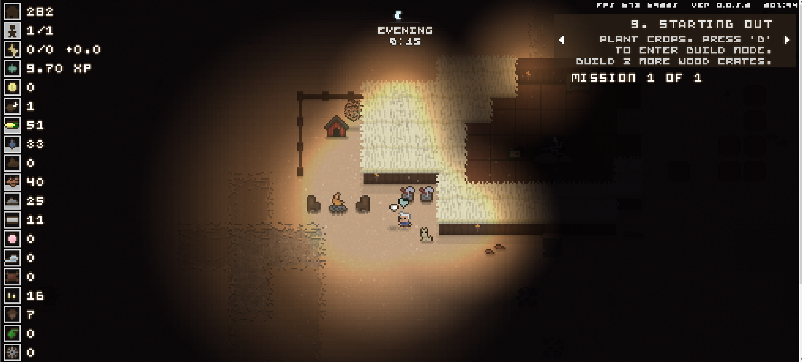
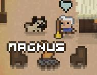

Sand: A Superfluous Game
Released as a sequel to "The Superfluous" (which was unknown to me until I started this review), Sand is an open world, post-apocalyptic, pixel-rendered, survival, forager-esque experience that takes place on what was once Alaska, now curiously presented as a desert.

On first launch, Sand places the player in a desolate landscape with tumbleweeds galloping across the low-rendered ground, all while being escorted by a soothing acoustic guitar playing a slow shuffle of a theme, further accompanied by the occasional hollow gust of wind. In contrast to the bleak design, I found this welcome a very warm one, and couldn't wait to get started.
Gameplay
Controls are standard for any top-down, PC game. WASD to move, Tab for inventory, E to interact, the works. Players can move faster by pressing shift, that's always a nice touch. The first available interaction is that of a dog, found right next to where you spawn. Upon following the prompt "press e to pet dog", you'll be greeted with an enthusiastic bark, akin to that of the dog in Stardew Valley, another pixel-heavy, top-down title I enjoy.
 (You can also rename the dog and change its breed, another nice touch. A goal of mine is to one day have a pug named Magnus.)
The only building in sight is a cottage left in tatters, though walking inside will acquaint with the first NPC of Sand. Covered in dust and rather goofy, Edie is a robot that regains sentience when you press his restart button. He acts as the tutorial while simultaneously handing out quests, granting a feeling of progress, which (in my opinion) help these types of survival in terms of maintaining player interest.
Upon completing the first few quests, the player will learn the basic mechanics of the game. Items can be acquired by either breaking or crafting. Water is only used for travelling outside the default square of land. Crafting is done with a few simple clicks in an easily navigable menu. From here, the player continues quest completion and progresses through a “rebuild and save humanity” story.
Meta/Meaning?
Edie is a quirky character, there’s no doubt about that. His humor is bizarre and self-aware, and by explaining the controls to the player, he recognizes that this is indeed a game, and does not shy away from that.
Personally, I found the meaning to be hidden within the overall tone of the game. From the hour and a half that I played, there is no alternative to the desert you find at the start. Dust storms are common, any other NPCs don’t stop to say howdy, unless you have coin that is, nights are black as tar, and everything is shrouded in bleakness. The meaning is simple, we have to save our world before it looks anything close to how it does in Sand.
Ok, Let's Wrap it Up
I thoroughly enjoyed my brief time with Sand. This comes as no surprise, as I already enjoy witty humor, pixelated graphics, and crafting-based progression systems. Needless to say, I'm a bit biased because of these design choices, so I urge the reader to try it out for themselves. There is a free option in terms of download, or a set-your-own-amount-of-payment option for the philanthropic among us. I'll leave a link here, feel free to visit and hop into the dusty world of Sand.